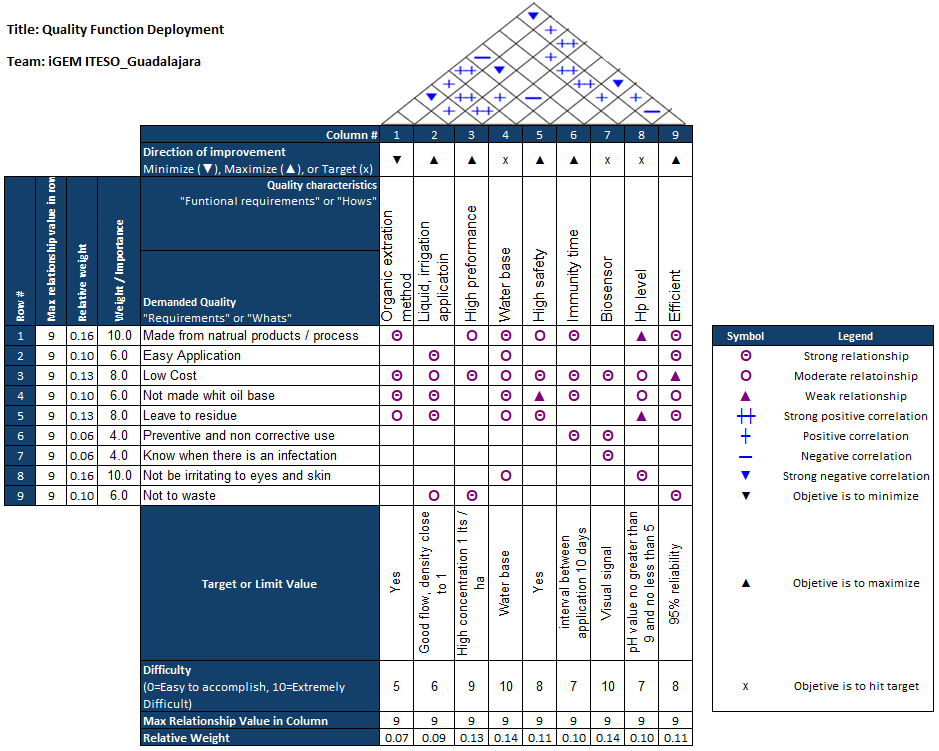
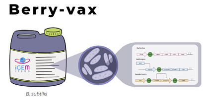

Proposed Project Implementation of BerryVax
Brief introduction
At iGEM ITESO, we created BerryVax as an integrated biotechnological solution for fungal pests and water scarcity in berry fields. By engineering Bacillus subtilis, it is possible to overproduce surfactin, a biosurfactant that improves fruit quality, surface wettability, and that protects the roots of the berry plants. Additionally, when BerryVax detects fusaric acid from a pathogenic fungus, it will produce an antifungal to remove the pest (Salehi et al., 2010; Coutte et al., 2015; Swain, 2008; Sandoval-Chávez et al., 2015). In order to design this solution, we did several interviews and visits to the berry fields to understand the needs of our stakeholders. During those visits, we learned that water scarcity (due to the current environmental situation) and fungal pests (because they are difficult to detect in a timely manner) were their main problems.
Business model and Viability
We developed a business model methodology to prove if BerryVax is a financially viable option. Through this methodology, we made a business model canvas, product market analysis, benchmarking, minimum product viability, and more. The value proposition and business model are shown below:

Figure 1. Business model canvas.
The product market analysis shows a great opportunity, the export of berries in Mexico is valued at $400 MDD, exporting 364 thousand tons around the world, and around 16% of the production is lost by fungal pests. We designed a simulation in SuperPro, which shows an analysis that demonstrates that BerryVax is a financially viable option.
link culero aqui
Desired Implementation
Having a functional phytovaccine with a preventive and corrective system against fungal plagues could be lifechanging for the berry crops in Mexico. BerryVax will be overproducing surfactin which will be helpful to prevent the growth of Fusarium oxysporum, a fungus that attacks the berry crops from the roots and is hard to detect on time (Nakano et al., 1988). Also, our product includes a sensing system, which can detect the presence of the fusaric acid and secrete chitinase, an enzyme that degrades chitin which is found in the cell walls of the fungi acting as an antifungal (Mihaylov et al., 2014). The third component that BerryVax has is a kill switch system; this is important because it works as a biocontainment mechanism, right before the spores begin to generate, a toxin is activated, and this will subsequently lead to the death of the bacteria (LMU, 2012). The previous description is intended for the product to be implemented outside of laboratory containment in the berry fields that are located in the western region of Mexico via the irrigation system of berry crops.
To fabricate BerryVax it is necessary to establish a series of protocols so we can make sure that the procedure inside the laboratory is efficient and effective. Detailed protocols are described in the lab section.
Stakeholders, End users, and Human Practices
We identified three main stakeholders:
With all the knowledge acquired in the validations (to learn more, visit the human practice site, we designed the following “Table of Needs”:

We decided to focus on the farmers as our user and client because they are the most affected by fungal pests, which develop over all the production process, both before and during the harvest. It is important to note that they have the power or opportunity to do an intervention.
Next, we developed a Quality Function Deployment (QFD) to transform the necessities of the farmers into requirements of our product and find the correlation between all requirements.
We can observe the Quality Characteristic or functional requirements (“Hows”) on the top row and the target or limit value for that requirement on its columns and the relationship between each demand quality with symbols.
Design and Application of the End Product
As we have mentioned in other sections, for us, listening to our stakeholders and working together with them was the cornerstone of every aspect of our project. We developed the product prototype by talking and getting feedback from some of the farmers that we visited. BerryVax, as a product, will be sold as a liquid, containing our genetically transformed B. subtilis and the optimum medium for preservation of the bacteria.
The product will be available in presentations of 4, 8 and 16 liters with a concentration of 1.33% of biomass to satisfy the needs of the small and medium-sized berry producers. BerryVax will be ready to use like any other biofertilizer product that can be injected into the irrigation system, or manually poured, depending on the technological capabilities of every producer.
Figure 2. BerryVax as a product and its composition.
Upscaling Model
We designed and simulated the upscaling bioprocess of the production of BerryVax. The production process is divided into three principal operations: biomass propagation, main fermentation, and product recovery and packaging. Every step was well thought to obtain the highest number of viable cells. The main challenge was certainly the selection of the recovery steps. We decided to purify the biomass based on the methodology of Czinkóczky and Németh (2020) and Pereira et al. (2013), using microfiltration, slow centrifugation, and pervaporation to avoid damaging BerryVax and to eliminate substances that could reduce the preservation time of the bacteria. To know more about the simulation process, please visit our Business Model section.
Biosafety and Biosecurity Considerations
Microbial Biocontainment System
Having control over a genetically modified organism at the time of releasing it into the environment is essential, therefore, it was sought to implement a biocontainment mechanism. A mechanism previously used by another iGEM 2012 team LMU Munich, was found, which uses a σ factor and a target promoter. We decided to implement a kill switch system to regulate the lifespan of our bacteria. After a certain period of time, the kill switch will start expressing an intracellular toxin that will cause apoptosis through the degrading of mRNA. The biocontainment system is described with more details in the Design section.
To enhance the biocontainment strategy, the use of integrative vectors was implemented with the purpose of avoiding horizontal transfer because of the use of plasmids. Once the verified genetic circuit has been inserted in the integrative vector, inside the bacteria, this vector will fuse in the DNA of the microorganism not having the chance of being a plasmid with the ability of leaving the bacterial cell and reaching another one (Couette 2021). With this biocontainment system, it is guaranteed that BerryVax will not alter the plant microbiome (Hobot, 2015).
Institutional Regulations
In order to develop BerryVax, it is essential to comply with the institutional regulations regarding the use of ITESO’s Biotechnology Laboratories Policies. Also, while developing a project like BerryVax, it is mandatory to have a project instructor as a supervisor to revise the protocols and to oversee any experimental work. Before entering the lab, the coordinator of ITESO’s Biotechnology Laboratories, Dr. Alejandro Arana Sánchez must revise the protocols and issue an approval statement. In the case of the users of the facilities, they must understand ITESO’s Biotechnology Laboratories Policies and comply with them to ensure safety while experimenting. Additionally, the ITESO HSE board has a branch of biological hazards that can help assess and manage risks that could potentially come up while working in the laboratory. puto link aqui
National Laws and Regulations
In Mexico, the Biosafety and Genetic Modified Organisms Intersectoral Commission is responsible for coordinating the policies about biosafety and the production, imports, exports, release, consumption, and, in general, the use of genetically modified organisms (GMOs). There is also another regulatory entity, the Federal Commission for the Protection against Sanitary Risk for products that are meant to be consumed by humans. This Commission assesses the risk against public health, and it has the faculty of giving authorization in subjects regarding GMOs, which would be necessary to legally implement BerryVax on berry crops.
Although there are regulatory entities of GMOs and their implementation such as the Secretariat of Environment and Natural Resources, the Secretariat of Agriculture and Rural Development , and the Federal Commission for the Protection against Sanitary Risk, it is important to note that there are several laws, norms, and regulations that need to be followed to be inside the legal framework of implementation. Additionally, these documents provide the necessary guidelines to execute a comprehensive and transparent risk assessment of the product to implement in case of implementation of a GMO outside of laboratory containment. Also, they elaborate on the use of GMOs outside of laboratory containment, research procedures, and the specific use in a certain sector. The laws, norms, and regulations applicable to our project in our country can be found in the safety section.